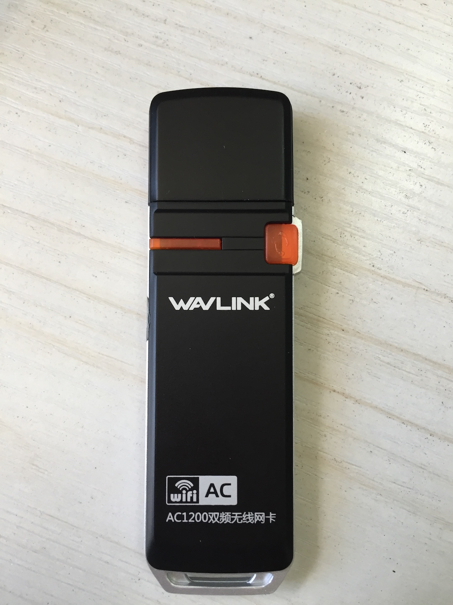
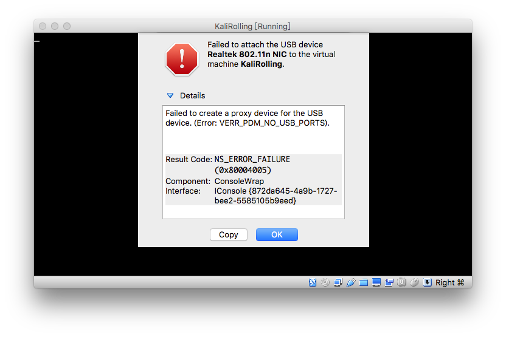

RTL8812AU
睿因（Wavlink） WL-WN688A2

Realtek Semiconductor Corp. RTL8812AU 802.11a/b/g/n/ac 2T2R DB WLAN Adapter
根据Kali Linux 2017.1 Release，该网卡目前已经可以被完美驱动支持了！
需要手工安装驱动
apt-get update
apt install realtek-rtl88xxau-dkms
这个网卡最大的亮点是支持802.11 AC，业界首款支持数据帧注入功能、支持802.11 AC的无线网卡驱动。
真机测试发现，该网卡连入VirtualBox的Guest OS时必须设置USB控制器为USB 3.0(xHCI)控制器才可以正常连入虚拟机。默认的USB 2.0控制器情况下连入网卡，VirtualBox会报错如下：

max # scan SSIDs: 9
max scan IEs length: 2304 bytes
max # sched scan SSIDs: 0
max # match sets: 0
max # scan plans: 1
max scan plan interval: -1
max scan plan iterations: 0
Retry short limit: 7
Retry long limit: 4
Coverage class: 0 (up to 0m)
Supported Ciphers:
* WEP40 (00-0f-ac:1)
* WEP104 (00-0f-ac:5)
* TKIP (00-0f-ac:2)
* CCMP-128 (00-0f-ac:4)
Available Antennas: TX 0 RX 0
Supported interface modes:
* IBSS
* managed
* AP
* monitor
* P2P-client
* P2P-GO
Band 1:
Capabilities: 0x19e3
RX LDPC
HT20/HT40
Static SM Power Save
RX HT20 SGI
RX HT40 SGI
TX STBC
RX STBC 1-stream
Max AMSDU length: 7935 bytes
DSSS/CCK HT40
Maximum RX AMPDU length 65535 bytes (exponent: 0x003)
Minimum RX AMPDU time spacing: 16 usec (0x07)
HT Max RX data rate: 300 Mbps
HT TX/RX MCS rate indexes supported: 0-15
Bitrates (non-HT):
* 1.0 Mbps
* 2.0 Mbps
* 5.5 Mbps
* 11.0 Mbps
* 6.0 Mbps
* 9.0 Mbps
* 12.0 Mbps
* 18.0 Mbps
* 24.0 Mbps
* 36.0 Mbps
* 48.0 Mbps
* 54.0 Mbps
Frequencies:
* 2412 MHz [1] (20.0 dBm)
* 2417 MHz [2] (20.0 dBm)
* 2422 MHz [3] (20.0 dBm)
* 2427 MHz [4] (20.0 dBm)
* 2432 MHz [5] (20.0 dBm)
* 2437 MHz [6] (20.0 dBm)
* 2442 MHz [7] (20.0 dBm)
* 2447 MHz [8] (20.0 dBm)
* 2452 MHz [9] (20.0 dBm)
* 2457 MHz [10] (20.0 dBm)
* 2462 MHz [11] (20.0 dBm)
* 2467 MHz [12] (20.0 dBm)
* 2472 MHz [13] (20.0 dBm)
* 2484 MHz [14] (20.0 dBm)
Band 2:
Capabilities: 0x19e3
RX LDPC
HT20/HT40
Static SM Power Save
RX HT20 SGI
RX HT40 SGI
TX STBC
RX STBC 1-stream
Max AMSDU length: 7935 bytes
DSSS/CCK HT40
Maximum RX AMPDU length 65535 bytes (exponent: 0x003)
Minimum RX AMPDU time spacing: 16 usec (0x07)
HT Max RX data rate: 300 Mbps
HT TX/RX MCS rate indexes supported: 0-15
VHT Capabilities (0x000010b0):
Max MPDU length: 3895
Supported Channel Width: neither 160 nor 80+80
RX LDPC
short GI (80 MHz)
TX STBC
SU Beamformee
VHT RX MCS set:
1 streams: MCS 0-9
2 streams: MCS 0-9
3 streams: not supported
4 streams: not supported
5 streams: not supported
6 streams: not supported
7 streams: not supported
8 streams: not supported
VHT RX highest supported: 866 Mbps
VHT TX MCS set:
1 streams: MCS 0-9
2 streams: MCS 0-9
3 streams: not supported
4 streams: not supported
5 streams: not supported
6 streams: not supported
7 streams: not supported
8 streams: not supported
VHT TX highest supported: 866 Mbps
Bitrates (non-HT):
* 6.0 Mbps
* 9.0 Mbps
* 12.0 Mbps
* 18.0 Mbps
* 24.0 Mbps
* 36.0 Mbps
* 48.0 Mbps
* 54.0 Mbps
Frequencies:
* 5170 MHz [34] (30.0 dBm)
* 5180 MHz [36] (30.0 dBm)
* 5190 MHz [38] (30.0 dBm)
* 5200 MHz [40] (30.0 dBm)
* 5210 MHz [42] (30.0 dBm)
* 5220 MHz [44] (30.0 dBm)
* 5230 MHz [46] (30.0 dBm)
* 5240 MHz [48] (30.0 dBm)
* 5260 MHz [52] (30.0 dBm) (radar detection)
* 5280 MHz [56] (30.0 dBm) (radar detection)
* 5290 MHz [58] (30.0 dBm) (radar detection)
* 5300 MHz [60] (30.0 dBm) (radar detection)
* 5310 MHz [62] (30.0 dBm) (radar detection)
* 5320 MHz [64] (30.0 dBm) (radar detection)
* 5500 MHz [100] (30.0 dBm) (radar detection)
* 5520 MHz [104] (30.0 dBm) (radar detection)
* 5540 MHz [108] (30.0 dBm) (radar detection)
* 5560 MHz [112] (30.0 dBm) (radar detection)
* 5580 MHz [116] (30.0 dBm) (radar detection)
* 5600 MHz [120] (30.0 dBm) (radar detection)
* 5620 MHz [124] (30.0 dBm) (radar detection)
* 5640 MHz [128] (30.0 dBm) (radar detection)
* 5660 MHz [132] (30.0 dBm) (radar detection)
* 5680 MHz [136] (30.0 dBm) (radar detection)
* 5700 MHz [140] (30.0 dBm) (radar detection)
* 5720 MHz [144] (30.0 dBm) (radar detection)
* 5745 MHz [149] (30.0 dBm)
* 5765 MHz [153] (30.0 dBm)
* 5785 MHz [157] (30.0 dBm)
* 5805 MHz [161] (30.0 dBm)
* 5825 MHz [165] (30.0 dBm)
* 5845 MHz [169] (30.0 dBm)
* 5920 MHz [184] (30.0 dBm)
* 5940 MHz [188] (30.0 dBm)
* 5960 MHz [192] (30.0 dBm)
* 5980 MHz [196] (30.0 dBm)
* 6000 MHz [200] (30.0 dBm)
* 6020 MHz [204] (30.0 dBm)
* 6040 MHz [208] (30.0 dBm)
* 6060 MHz [212] (30.0 dBm)
* 6080 MHz [216] (30.0 dBm)
Supported commands:
* new_interface
* set_interface
* new_key
* start_ap
* new_station
* set_bss
* join_ibss
* set_pmksa
* del_pmksa
* flush_pmksa
* remain_on_channel
* frame
* set_wiphy_netns
* set_channel
* connect
* disconnect
Supported TX frame types:
* IBSS: 0x00 0x10 0x20 0x30 0x40 0x50 0x60 0x70 0x80 0x90 0xa0 0xb0 0xc0 0xd0 0xe0 0xf0
* managed: 0x00 0x10 0x20 0x30 0x40 0x50 0x60 0x70 0x80 0x90 0xa0 0xb0 0xc0 0xd0 0xe0 0xf0
* AP: 0x00 0x10 0x20 0x30 0x40 0x50 0x60 0x70 0x80 0x90 0xa0 0xb0 0xc0 0xd0 0xe0 0xf0
* AP/VLAN: 0x00 0x10 0x20 0x30 0x40 0x50 0x60 0x70 0x80 0x90 0xa0 0xb0 0xc0 0xd0 0xe0 0xf0
* P2P-client: 0x00 0x10 0x20 0x30 0x40 0x50 0x60 0x70 0x80 0x90 0xa0 0xb0 0xc0 0xd0 0xe0 0xf0
* P2P-GO: 0x00 0x10 0x20 0x30 0x40 0x50 0x60 0x70 0x80 0x90 0xa0 0xb0 0xc0 0xd0 0xe0 0xf0
Supported RX frame types:
* IBSS: 0xd0
* managed: 0x40 0xd0
* AP: 0x00 0x20 0x40 0xa0 0xb0 0xc0 0xd0
* AP/VLAN: 0x00 0x20 0x40 0xa0 0xb0 0xc0 0xd0
* P2P-client: 0x40 0xd0
* P2P-GO: 0x00 0x20 0x40 0xa0 0xb0 0xc0 0xd0
WoWLAN support:
* wake up on anything (device continues operating normally)
software interface modes (can always be added):
* monitor
interface combinations are not supported
Device supports scan flush.
# lsusb -t
/: Bus 02.Port 1: Dev 1, Class=root_hub, Driver=xhci_hcd/6p, 5000M
|__ Port 1: Dev 2, If 0, Class=Vendor Specific Class, Driver=8812au, 5000M
# lshw -class bus
*-usbhost:0
product: xHCI Host Controller
vendor: Linux 4.9.0-kali4-amd64 xhci-hcd
physical id: 0
bus info: usb@1
logical name: usb1
version: 4.09
capabilities: usb-2.00
configuration: driver=hub slots=8 speed=480Mbit/s
# uname -a
Linux KaliRolling 4.9.0-kali4-amd64 #1 SMP Debian 4.9.30-2kali1 (2017-06-22) x86_64 GNU/Linux
# dkms status
realtek-rtl88xxau, 4.3.21~20170330, 4.9.0-kali4-amd64, x86_64: installed (original_module exists)
rtl8812AU, 4.3.14, 4.6.0-kali1-amd64, x86_64: installed
rtl8812AU, 4.3.14, 4.9.0-kali4-amd64, x86_64: built
virtualbox-guest, 5.1.18, 4.6.0-kali1-amd64, x86_64: installed
virtualbox-guest, 5.1.18, 4.9.0-kali4-amd64, x86_64: installed
以下内容已过时（2017-08-02）
Kali 2.0（Linux kali 4.0.0-kali1-amd64 #1 SMP Debian 4.0.4-1+kali2 (2015-06-03) x86_64 GNU/Linux）原生并没有包含支持该网卡的驱动，经过研究和实验，最终使用了以下方案不完美的搞定了该网卡在Kali 2.0下的驱动：
可以实现的特性：
- ifconfig可见网卡
- iw可以查看和管理无线网卡
- 可以设置为AP模式（hostapd）
暂时不支持的特性：
- 无法设置为监听模式
apt-get update && apt-get install dkms
git clone https://github.com/abperiasamy/rtl8812AU_8821AU_linux
cd rtl8812AU_8821AU_linux && cp -R . /usr/src/rtl8812AU_8821AU_linux-1.0
dkms add -m rtl8812AU_8821AU_linux -v 1.0
dkms build -m rtl8812AU_8821AU_linux -v 1.0
dkms install -m rtl8812AU_8821AU_linux -v 1.0
modprobe -a 8812au
max # scan SSIDs: 9
max scan IEs length: 2304 bytes
Retry short limit: 7
Retry long limit: 4
Coverage class: 0 (up to 0m)
Supported Ciphers:
* WEP40 (00-0f-ac:1)
* WEP104 (00-0f-ac:5)
* TKIP (00-0f-ac:2)
* CCMP (00-0f-ac:4)
Available Antennas: TX 0 RX 0
Supported interface modes:
* IBSS
* managed
* AP
* monitor
* P2P-client
* P2P-GO
Band 1:
Capabilities: 0x1862
HT20/HT40
Static SM Power Save
RX HT20 SGI
RX HT40 SGI
No RX STBC
Max AMSDU length: 7935 bytes
DSSS/CCK HT40
Maximum RX AMPDU length 65535 bytes (exponent: 0x003)
Minimum RX AMPDU time spacing: 16 usec (0x07)
HT TX/RX MCS rate indexes supported: 0-15, 32
Bitrates (non-HT):
* 1.0 Mbps
* 2.0 Mbps
* 5.5 Mbps
* 11.0 Mbps
* 6.0 Mbps
* 9.0 Mbps
* 12.0 Mbps
* 18.0 Mbps
* 24.0 Mbps
* 36.0 Mbps
* 48.0 Mbps
* 54.0 Mbps
Frequencies:
* 2412 MHz [1] (20.0 dBm)
* 2417 MHz [2] (20.0 dBm)
* 2422 MHz [3] (20.0 dBm)
* 2427 MHz [4] (20.0 dBm)
* 2432 MHz [5] (20.0 dBm)
* 2437 MHz [6] (20.0 dBm)
* 2442 MHz [7] (20.0 dBm)
* 2447 MHz [8] (20.0 dBm)
* 2452 MHz [9] (20.0 dBm)
* 2457 MHz [10] (20.0 dBm)
* 2462 MHz [11] (20.0 dBm)
* 2467 MHz [12] (20.0 dBm) (no IR)
* 2472 MHz [13] (20.0 dBm)
* 2484 MHz [14] (20.0 dBm) (no IR)
Band 2:
Capabilities: 0x1862
HT20/HT40
Static SM Power Save
RX HT20 SGI
RX HT40 SGI
No RX STBC
Max AMSDU length: 7935 bytes
DSSS/CCK HT40
Maximum RX AMPDU length 65535 bytes (exponent: 0x003)
Minimum RX AMPDU time spacing: 16 usec (0x07)
HT TX/RX MCS rate indexes supported: 0-15, 32
Bitrates (non-HT):
* 6.0 Mbps
* 9.0 Mbps
* 12.0 Mbps
* 18.0 Mbps
* 24.0 Mbps
* 36.0 Mbps
* 48.0 Mbps
* 54.0 Mbps
Frequencies:
* 5170 MHz [34] (disabled)
* 5180 MHz [36] (20.0 dBm) (no IR)
* 5190 MHz [38] (20.0 dBm) (no IR)
* 5200 MHz [40] (20.0 dBm) (no IR)
* 5210 MHz [42] (20.0 dBm) (no IR)
* 5220 MHz [44] (20.0 dBm) (no IR)
* 5230 MHz [46] (20.0 dBm) (no IR)
* 5240 MHz [48] (20.0 dBm) (no IR)
* 5260 MHz [52] (20.0 dBm) (no IR, radar detection)
DFS state: usable (for 784 sec)
DFS CAC time: 60000 ms
* 5280 MHz [56] (20.0 dBm) (no IR, radar detection)
DFS state: usable (for 784 sec)
DFS CAC time: 60000 ms
* 5300 MHz [60] (20.0 dBm) (no IR, radar detection)
DFS state: usable (for 784 sec)
DFS CAC time: 60000 ms
* 5320 MHz [64] (20.0 dBm) (no IR, radar detection)
DFS state: usable (for 784 sec)
DFS CAC time: 60000 ms
* 5500 MHz [100] (20.0 dBm) (no IR, radar detection)
DFS state: usable (for 784 sec)
DFS CAC time: 60000 ms
* 5520 MHz [104] (20.0 dBm) (no IR, radar detection)
DFS state: usable (for 784 sec)
DFS CAC time: 60000 ms
* 5540 MHz [108] (20.0 dBm) (no IR, radar detection)
DFS state: usable (for 784 sec)
DFS CAC time: 60000 ms
* 5560 MHz [112] (20.0 dBm) (no IR, radar detection)
DFS state: usable (for 784 sec)
DFS CAC time: 60000 ms
* 5580 MHz [116] (20.0 dBm) (no IR, radar detection)
DFS state: usable (for 784 sec)
DFS CAC time: 60000 ms
* 5600 MHz [120] (20.0 dBm) (no IR, radar detection)
DFS state: usable (for 784 sec)
DFS CAC time: 60000 ms
* 5620 MHz [124] (20.0 dBm) (no IR, radar detection)
DFS state: usable (for 784 sec)
DFS CAC time: 60000 ms
* 5640 MHz [128] (20.0 dBm) (no IR, radar detection)
DFS state: usable (for 784 sec)
DFS CAC time: 60000 ms
* 5660 MHz [132] (20.0 dBm) (no IR, radar detection)
DFS state: usable (for 784 sec)
DFS CAC time: 60000 ms
* 5680 MHz [136] (20.0 dBm) (no IR, radar detection)
DFS state: usable (for 784 sec)
DFS CAC time: 60000 ms
* 5700 MHz [140] (20.0 dBm) (no IR, radar detection)
DFS state: usable (for 784 sec)
DFS CAC time: 60000 ms
* 5745 MHz [149] (20.0 dBm) (no IR)
* 5765 MHz [153] (20.0 dBm) (no IR)
* 5785 MHz [157] (20.0 dBm) (no IR)
* 5805 MHz [161] (20.0 dBm) (no IR)
* 5825 MHz [165] (20.0 dBm) (no IR)
* 5920 MHz [184] (disabled)
* 5940 MHz [188] (disabled)
* 5960 MHz [192] (disabled)
* 5980 MHz [196] (disabled)
* 6000 MHz [200] (disabled)
* 6020 MHz [204] (disabled)
* 6040 MHz [208] (disabled)
* 6060 MHz [212] (disabled)
* 6080 MHz [216] (disabled)
Supported commands:
* new_interface
* set_interface
* new_key
* start_ap
* new_station
* set_bss
* join_ibss
* set_pmksa
* del_pmksa
* flush_pmksa
* remain_on_channel
* frame
* set_channel
* connect
* disconnect
Supported TX frame types:
* IBSS: 0x00 0x10 0x20 0x30 0x40 0x50 0x60 0x70 0x80 0x90 0xa0 0xb0 0xc0 0xd0 0xe0 0xf0
* managed: 0x00 0x10 0x20 0x30 0x40 0x50 0x60 0x70 0x80 0x90 0xa0 0xb0 0xc0 0xd0 0xe0 0xf0
* AP: 0x00 0x10 0x20 0x30 0x40 0x50 0x60 0x70 0x80 0x90 0xa0 0xb0 0xc0 0xd0 0xe0 0xf0
* AP/VLAN: 0x00 0x10 0x20 0x30 0x40 0x50 0x60 0x70 0x80 0x90 0xa0 0xb0 0xc0 0xd0 0xe0 0xf0
* P2P-client: 0x00 0x10 0x20 0x30 0x40 0x50 0x60 0x70 0x80 0x90 0xa0 0xb0 0xc0 0xd0 0xe0 0xf0
* P2P-GO: 0x00 0x10 0x20 0x30 0x40 0x50 0x60 0x70 0x80 0x90 0xa0 0xb0 0xc0 0xd0 0xe0 0xf0
Supported RX frame types:
* IBSS: 0xd0
* managed: 0x40 0xd0
* AP: 0x00 0x20 0x40 0xa0 0xb0 0xc0 0xd0
* AP/VLAN: 0x00 0x20 0x40 0xa0 0xb0 0xc0 0xd0
* P2P-client: 0x40 0xd0
* P2P-GO: 0x00 0x20 0x40 0xa0 0xb0 0xc0 0xd0
software interface modes (can always be added):
* monitor
interface combinations are not supported
Device supports scan flush.